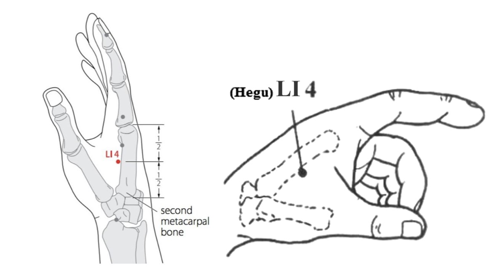
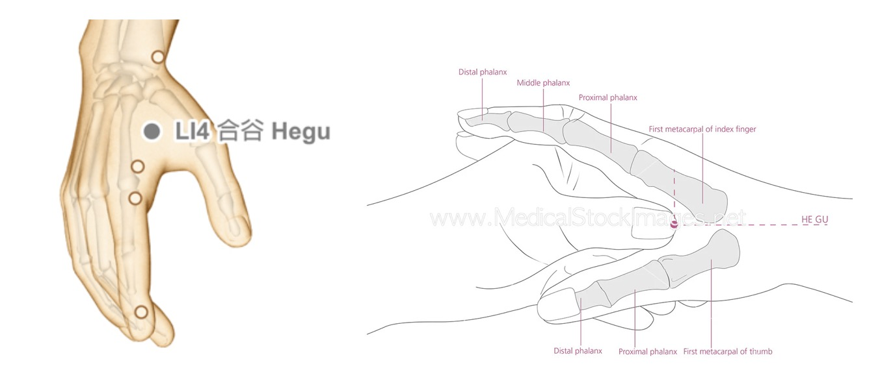
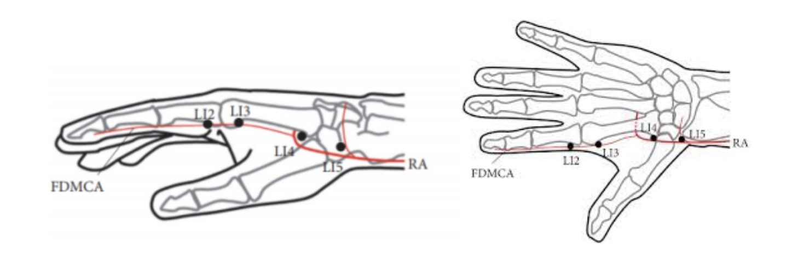

합곡혈, 정확히 어디일까요?
합곡혈은 아마 대부분의 일반인들도 알고 있는 국민 혈자리일 거예요. 그만큼 잘 알려져 있는 혈자리인데요. 이 정확한 위치가 어떻게 되냐고 묻는 질문을 자주 받아요. 학생들도 물어보고, 유튜브 구독자들도 물어보고 합니다. 이렇게 유명한 혈자리를 왜 정확한 위치를 모르는 걸까요? 실제 합곡혈에 대한 위치에 대한 의견이 분분해서 책마다 조금씩 다르게 나와 있어요.
합곡혈 위치에 대한 세 가지 주요 견해
1번 위치 (대장경 유주 경락상)
이 지점은 대장경 경락의 표준 유주 노선을 따르는 위치로, 손등의 둘째 손허리뼈, 즉 검지뼈 측면에 바짝 붙여서 잡는 것이 핵심입니다. 뼈라는 명확한 해부학적 구조물을 기준점으로 삼아 그 몸통의 정확한 중간 지점을 취혈하며, 뼈의 경계선에서 벗어나지 않도록 합니다.
2번 위치 (두 손가락 사이 근육)
이곳은 엄지와 검지 사이의 가장 두툼한 근육 부위인 호구의 한가운데에 자리 잡고 있습니다. 1번 위치처럼 뼈에 붙여 잡는 것이 아니라, 뼈대에서 벗어나 두 손가락 사이 공간의 중심으로 이동한 지점입니다. 주로 근육의 중심이나 손으로 눌렀을 때 가장 민감하게 반응하는 압통점을 기준으로 찾습니다.
3번 위치 (두 중수골이 갈라지는 시작점)
이 위치는 첫째 손허리뼈(엄지뼈)와 둘째 손허리뼈(검지뼈)가 서로 만나다가 갈라지기 시작하는 결합부를 기준점으로 합니다. 다른 위치들과 비교했을 때 가장 손목에 가까운 쪽(프록시말)에 있으며, 두 뼈가 만들어내는 V자 협곡의 꼭짓점에 해당하는 해부학적 지점입니다.
일본의 연구팀은 이 부위 합곡에서 radial nerve를 자극함으로서 말초순환을 촉진할 수 있다고 합니다. 이 혈자리를 동씨침을 하는 사람이라면 '거기는 영골이라고, 합곡이 아니야!'라고 소리를 지를지도 몰라요. 단언컨데 거기도 합곡혈입니다. 저는 동씨침 굉장히 좋아하고, 효과도 많이 보지만, 기존 혈자리를 아예 다른 혈자리인 것마냥 이름을 붙여서 퍼뜨리는 것은 아주 아주 마음에 안 듭니다.
위치 요약 비교
| 구분 | 1번 위치 | 2번 위치 | 3번 위치 |
|---|---|---|---|
| 기준점 | 둘째 손허리뼈(검지뼈) 중간 | 엄지와 검지 사이 가장 두툼한 근육 | 첫째와 둘째 손허리뼈가 갈라지는 지점 |
| 특징 | 뼈에 가깝게 취혈, 해부학적 명확성 | 근육 중앙 또는 압통점 기준, 기능적 | 가장 손목에 가까움, V자 협곡의 꼭짓점 |
오죽하면 합곡혈에 관한 치과 의사가 쓴 이런 논문이 있어요. 5가지의 다른 위치를 설정해서 침을 놓은 다음에 각기 효과가 어떻게 다른가 조사한 논문이었는데요. 아래 그림과 같이 다른 위치해서 합곡혈을 취해서 각기다른 결과를 비교했습니다. 결과가 궁금하시다구요?
저는 뭐 하나도 궁금하지 않습니다. 왜냐고요? 저는 합곡혈의 정확한 위치를 알기 때문이죠. (논문의 결과도 나눌 만큼 의미가 없습니다.) 어떻게 알까요? 내경 부터 수많은 사람들이 합곡을 표현했는데, 모르는 것이 더 이상하지 않나요? 우리 어떻게 다양한 책들에서 합곡혈의 위치 표현했는지 한번 봅시다.
좀 이상하죠? 2000년 동안의 책들에 정확한 표현이 하나도 없으니. 이렇게 표현하는 방식이 한의학에서 혈자리를 표현하는 방식이었습니다. 현대 한의학에서는 혈자리를 좌표로 표기하길 원하거든요. 그러니까 측정을 통한 정확한 좌표, 그것도 정량화할 수 있는 좌표, 숫자로 표현하기를 원해요. '두 손가락 사이에 정 중앙, 근위부로 3분의 1 지점이다' 뭐 이런 식으로 하면 좌표가 만들어지잖아요. 그렇게 해서 잡으면 누구나 똑같은 자리에서 합곡표를 잡을 수 있겠죠. 그런데, 그건 합곡이 아니에요. 이 옛날 책들을 보면 그런 얘기가 하나도 안 나와요. 과연 우리 선배 한의사들이 멍청해서 그랬을까요? 왜 이렇게 시를 쓰듯 막연하게 기술했을까요?
또 고전에 담긴 혈자리 위치 설명을 보면 좌표와는 거리가 먼, 감각적인 표현을 사용한 것이 독특합니다. 바꿔 말해서, 혈자리는 손끝의 느낌이 달라지는 곳에서 취혈한다는 얘기입니다. 그래서 합곡혈에 대한 고전 속의 지도는 시적일 수밖에 없는 거예요. 마치 어린아이들이 그린 보물 지도처럼 '커다란 참나무 옆 호수와 사람 모양 돌멩이 사이'와 같이 설명하는 방식이죠. 혈자리가 사람마다, 시간마다 달랐기 때문에 이렇게 설명할 수밖에 없었고, 보물을 찾듯 손으로 느껴보는 수밖에 없었던 겁니다. 그때 고대인들이 길잡이로 삼았던 대표적인 감각 표현들은 다음과 같습니다.
함중 (陷中)
푹 꺼지는 듯한 느낌이 드는 곳
완완중 (宛宛中)
주변과 명확히 구분되는 부드러운 느낌
누누연 (累累然)
멍울이나 구슬처럼 뭉쳐서 만져지는 곳
동맥응수 (動脈應手)
손가락 아래에서 맥이 뛰는 것이 느껴지는 곳
합곡혈도 다르지 않고요. 어떻게 만져가서 찾아가느냐에 따라 개인마다, 혹은 시간마다 그때그때 다르게 합곡혈이 잡혀질 수 있습니다.
현대 중의학에서 제대로된 취혈은 모르고, 혈자리를 엉터리로 정량화해서 정의하려는 것은 매우 안타까운 일입니다. 손으로 혈자리를 느끼는 방법을 모르니까, 1/4이다, 1/3이다, 아래로 3촌, 외측으로 2촌하면서 헛짓거리 하고 있는 거예요. 오늘 합곡혈자리 뿐아니라, 모든 혈자리에 대한 확실한 개념을 잡으셨기를 바랍니다.
"진혈은 해부학적 측량으로 찾는 것이 아닙니다. 합곡의 진혈도 손의 느낌으로 찾아야 합니다."
Where Exactly is the Hegu (LI4) Acupoint?
The Hegu (LI4) point is likely a nationally recognized acupoint that most people have heard of. It's that well-known. However, I often get asked about its exact location by students and YouTube subscribers alike. Why is it that such a famous acupoint's precise location is not widely known? It's because opinions on the location of Hegu vary, and different books describe it slightly differently.
Three Main Theories on the Location of Hegu
1. On the Large Intestine Meridian Pathway
This point follows the standard pathway of the Large Intestine meridian. The key is to locate it right next to the side of the second metacarpal bone (the index finger bone) on the dorsum of the hand. It uses the bone as a clear anatomical reference, taking the exact midpoint of its shaft without straying from the bone's border.
2. In the Muscle Between Two Fingers
This location is in the middle of the Hoku, the thickest part of the muscle between the thumb and index finger. Instead of being adjacent to the bone like in the first location, it moves away from the bone to the center of the space between the two fingers. It is often found by identifying the center of the muscle or the most sensitive tender point upon palpation.
3. At the Junction of the Two Metacarpals
This location is referenced from the junction where the first metacarpal (thumb bone) and the second metacarpal (index finger bone) meet and begin to diverge. Compared to the other locations, it is the most proximal (closer to the wrist) and corresponds to the anatomical apex of the V-shaped valley formed by the two bones.
A Japanese research team reported that stimulating the radial nerve at this Hegu point can promote peripheral circulation. Practitioners of Master Tung's acupuncture might scream, 'That's Ling Gu, not Hegu!' But I can assure you, that is also a Hegu point. I am very fond of Master Tung's acupuncture and have seen great results with it, but I strongly disagree with the practice of renaming existing acupoints as if they are entirely different points and popularizing them as such.
Location Summary Comparison
| Category | Location 1 | Location 2 | Location 3 |
|---|---|---|---|
| Reference Point | Midpoint of the 2nd metacarpal bone | Thickest muscle between thumb and index | Junction where 1st and 2nd metacarpals diverge |
| Characteristic | Close to the bone, anatomically clear | Muscle center or tender point, functional | Closest to the wrist, apex of the V-shape |
It's so contentious that there's even a paper written by a dentist about the Hegu point. The paper investigated the different effects of needling five different locations. As shown in the figure below, they compared the results by selecting Hegu at different locations. Are you curious about the results?
I'm not curious at all. Why? Because I know the true location of Hegu. (The paper's results are not significant enough to discuss.) How do I know? Since the time of the Neijing, countless people have described Hegu; isn't it stranger not to know? Let's take a look at how various books have described the location of Hegu.
Isn't it a bit strange? For 2000 years, none of the books have a precise description. This was the traditional way of describing acupoints in East Asian medicine. Modern traditional medicine, however, wants to mark acupoints with coordinates. They want precise, quantifiable coordinates expressed in numbers. For example, 'the center point between the two fingers, one-third of the way proximally.' This creates a coordinate, right? If you locate it that way, everyone can find the Hegu point at the exact same spot. But that's not Hegu. These old books don't say anything like that. Were our predecessors foolish? Why did they describe it so vaguely, as if writing poetry?
Furthermore, descriptions of acupoint locations in the classics are unique for their use of sensory expressions rather than coordinates. In other words, an acupoint is located where the sensation under the fingertips changes. This is why the classical maps to acupoints like Hegu had to be poetic. They are like a child's treasure map: 'between the lake and the person-shaped rock next to the giant oak tree.' This was the only way to describe them, as the exact location varied from person to person and from time to time. The only way to find them was to feel for them with your hands, as if digging for treasure. The following are the key sensory expressions the ancients used as guides.
陷中 (Hàmzhōng)
A sunken or depressed feeling.
宛宛中 (Wǎnwǎnzhōng)
A soft, yielding feeling distinct from the surroundings.
累累然 (Lěilěirán)
A nodule-like or "string-of-pearls" feeling.
動脈應手 (Dòngmài yìng shǒu)
Feeling a pulse or arterial beat under the finger.
Hegu is no different. Depending on how you feel for it, the Hegu point can be located differently for each person, or even at different times.
It is a great pity that modern Chinese medicine attempts to quantify and define acupoints incorrectly, without knowing how to properly locate them. Because they don't know how to feel for acupoints with their hands, they are engaged in the futile exercise of saying it's 1/4, 1/3, 3 cun down, 2 cun laterally. I hope that today you have grasped a firm concept not only of the Hegu point but of all acupoints.
"The true acupoint is not found by anatomical measurement. The true point of Hegu must also be found by the feeling in the hand."